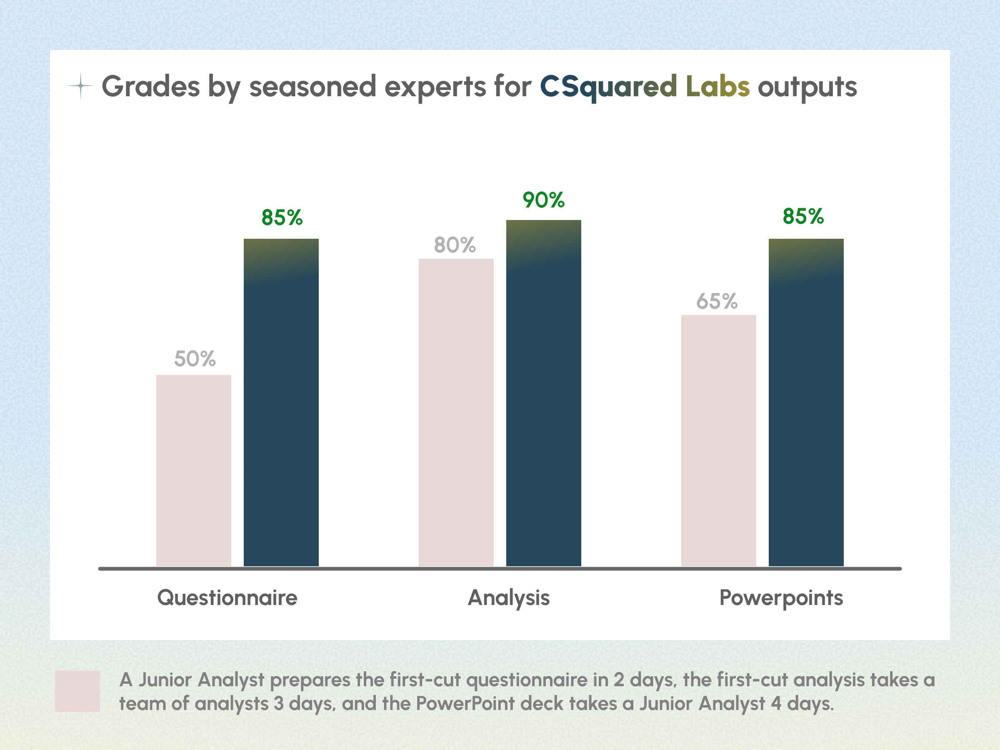
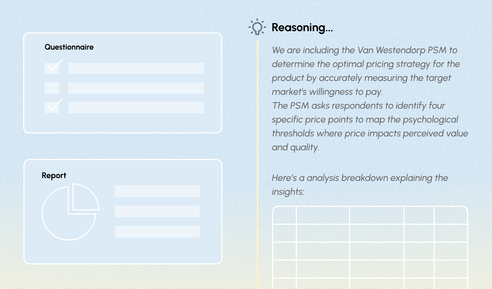
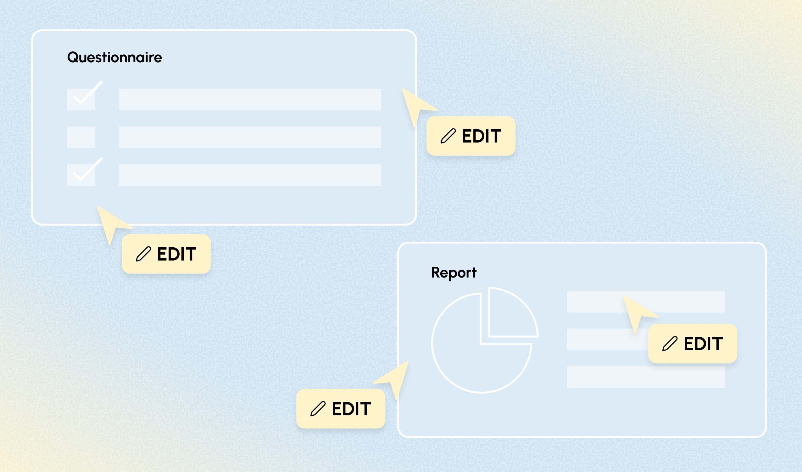
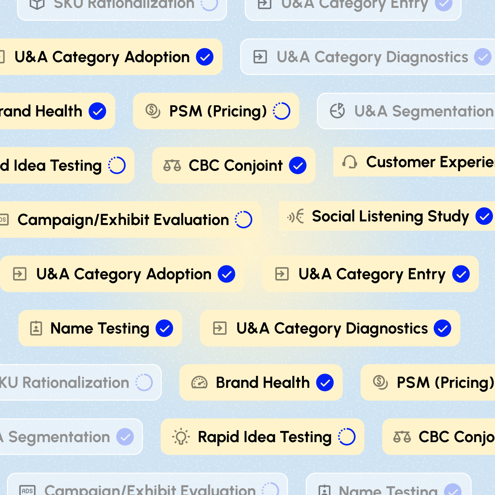
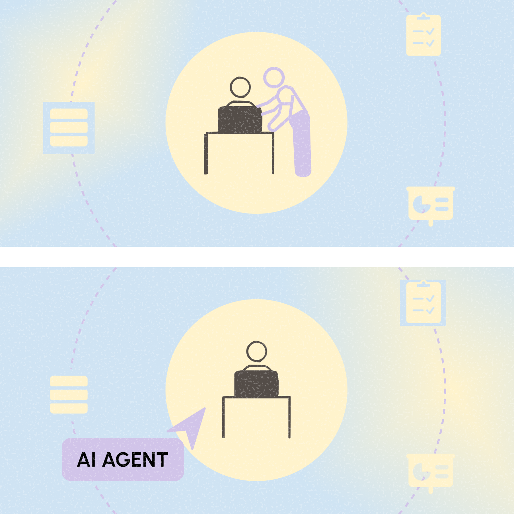
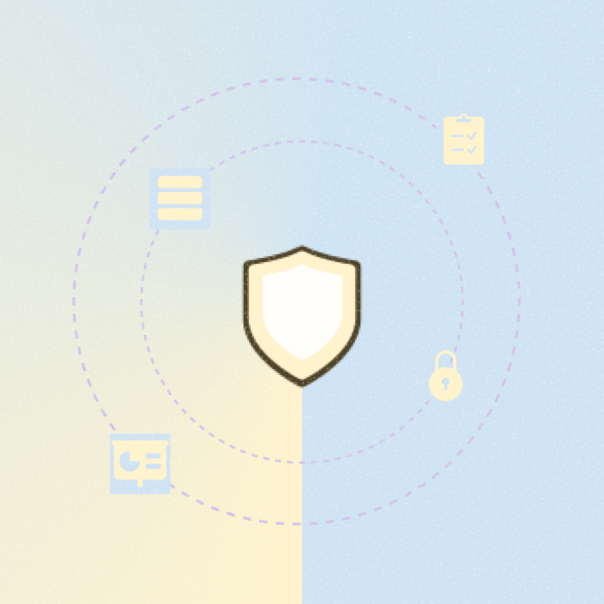

Top-tier research rigor.
Delivered in minutes.
CSquared Labs is an automated, AI-powered platform built for market researchers and consumer insights teams. Drop in your files, set your parameters, and generate high-quality research insights in a single click.
Co-built and stress-tested by seasoned experts.
Designed with uncompromising attention to detail for your high-stakes work.

Designed for
Our platform is engineered specifically for elite research teams who cannot compromise on accuracy.
Market Researchers
Who need to scale output without scaling headcount or cutting corners.
Consumer Insights Leaders
Who require elite-level, defensible data at the speed of modern business.
Sophisticated Power. Zero Black Boxes.
We convert the most complex research methodologies into a streamlined, automated workflow, while ensuring the expert always remains in the driver's seat.

No-Black-Box Philosophy
Maintain end-to-end explainability. You see the logic, trust the process, and own the rigor.

Full Workflow Control
Analyze your own data and seamlessly edit outputs to fit your exact standards.
We support scale and sophistication
Enterprise-grade architecture built to power high-stakes organizational pipelines.

1. Scalable Infrastructure
Run 100+ research campaigns simultaneously.

2. Elite Support
Dedicated Forward Deployed Engineers to support organizational change.

3. Enterprise Governance
Enterprise ready MSAs, DPAs. SOC2/ISO in-flight.
The value
Uncompromising outcomes that elevate your operational capabilities and research standing.
Expand Research Capacity
Execute on double the workload without adding overhead, enabling your team to scale insights seamlessly.
Gain a Competitive Edge
Deliver deep methodology reports within hours, leaving slow-moving agencies and traditional setups far behind.
Upgrade your research capacity.
Experience sleep-easy-at-night quality at modern business speed.
Get started